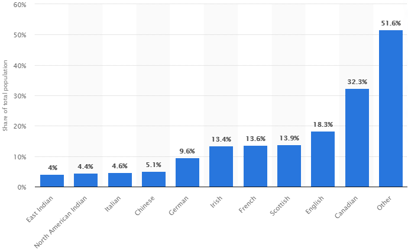
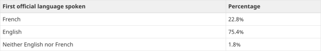
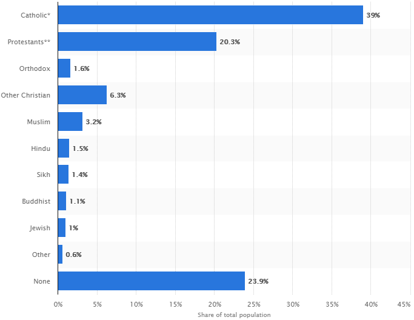

Canada
Page 1 | Culture
Canadian Culture
Legal age to vote in elections, drink alcohol, and drive a car/
Edad legal para votar en las elecciones, beber alcohol y conducir un
automóvil:
- The legal age to vote in elections in Canada is 18 years
- The legal drinking age is 18 years in Alberta, Manitoba, and Québec, and 19
years in the rest of the country.
- The legal age of driving or getting a drivers licence is 16 years but with
permission of parent(s), at 19 years you are able to get a driver’s licence
without parent’s permission.
-La edad legal para votar en las elecciones en Canadá es de 18 años.
- La edad legal para beber es de 18 años en Alberta, Manitoba y Quebec, y de
19 años en el resto del país.
- La edad legal para conducir o obtener una licencia de conducir es de 16
años, pero con el permiso de los padres, a los 19 años puede obtener una
licencia de conducir sin el permiso de los padres.
2 traditions/ celebrations unique to Canada/
2 tradiciones / celebraciones únicas en Canadá:
“Canada’s unique cultural mosaic led the federal government to declare the country
a multicultural society in 1971, to entrench multiculturalism in Canada’s Charter of
Rights and Freedoms in 1985, to pass a Multiculturalism Act in 1988, to create a
Department of Multiculturalism and Citizenship in 1991, and to organize an annual
Canadian Multiculturalism Day on June 27 every year since 2003. The policy of
multiculturalism acknowledges that all ethnic and aboriginal groups have the right to
preserve their own cultures and identities within the Canadian society, and that
cultural pluralism is a core Canadian value. ”
“El mosaico cultural único de Canadá llevó al gobierno federal a declarar al país una
sociedad multicultural en 1971, a afianzar el multiculturalismo en la Carta de
Derechos y Libertades de Canadá en 1985, a aprobar una Ley de Multiculturalismo
en 1988, a crear un Departamento de Multiculturalismo y Ciudadanía en 1991 y
organizar un Día del multiculturalismo canadiense anual el 27 de junio de cada año
desde 2003. La política del multiculturalismo reconoce que todos los grupos étnicos
y aborígenes tienen derecho a preservar sus propias culturas e identidades dentro
de la sociedad canadiense, y que el pluralismo cultural es un elemento fundamental
del valor canadiense. "
2 current problems in Canada/
2 problemas actuales en Canadá:
One of the problems Canada is going through is falling oil and gas prices.
The Canadian company Western Canadian Select went through negative figures
and, according to the Labor Market Information Council, more than 13.00 employees
between February and May 2020 were laid off; The government authorized support
to the industry, supporting them with 1,720 million Canadian dollars (1,120 million
euros) to recover employees and 750 million dollars in an emissions reduction fund.
“Uno de los problemas por los que atraviesa Canadá es la caída de los precios del
petróleo y el gas.
La empresa canadiense Western Canadian Select pasó por cifras negativas y,
según el Labor Market Information Council, más de 13,00 empleados entre febrero y
mayo de 2020 fueron despedidos; El gobierno autorizó el apoyo a la industria,
apoyándola con 1.720 millones de dólares canadienses (1.120 millones de euros)
para recuperar empleados y 750 millones de dólares en un fondo de reducción de
emisiones.”
Type of political system/
Tipo de sistema político:
Canada’s political system is a constitutional monarchy and a parliamentary
democracy. Canada’s Parliament consists of three parts: the Queen which is
represented by the governor general, the Senate which is a complementary
legislative body to the elected House of Commons and helps providing sober second
thoughts, and the House of Commons which debates issues, votes on the passage
of laws and ensures the Government is held accountable.
El sistema político de Canadá es una monarquía constitucional y una democracia
parlamentaria. El Parlamento de Canadá consiste de tres partes: la Reina, que está
representada por el gobernador general, el Senado, que es un cuerpo legislativo
complementario a la Cámara de los Comunes elegida y ayuda a proporcionar
reflexiones sobrias, y la Cámara de los Comunes, que debate temas, vota sobre la
aprobación de leyes y garantiza que el Gobierno rinda cuentas.
Local currency and the equivalent to pesos/ dollars/
Moneda local y el equivalente a pesos / dólares:
The “Canadian Dollar” (CAD) is the official local currency of Canada. This currency
also has some nicknames which people usually use: Loonie, buck, huard and
piastre. 1 canadian dollar equals to 16.66 pesos and 0.80 US dollars.
In the Big Mac index the price for a big mac is of US$5.18, while in the USA the price
is of US$5.67, meaning that the canadian dollar is 7% undervalued against the US
dollar.
El "Dólar Canadiense" es la moneda oficial de Canadá. Esta moneda también tiene
algunos apodos que la gente suele usar: Loonie, buck, huard y piastre. 1 dólar
canadiense es igual a 1.66 pesos y 0.80 dólares estadounidenses. En el índice Big
Mac el precio de un big mac es de US $5,18, mientras que en Estados Unidos el
precio es de US $5,67, lo que significa que el dólar canadiense está sobrevaluado
en un 7% frente al dólar estadounidense.


Current political leaders/
Líderes políticos actuales:
The current main leader of Canada is Justin James Trudeau, is the Prime Minister of
Canada and Canada's 23rd Prime Minister.
El líder actual de Canadá es Justin James Trudeau, el cual es el primer ministro de
Canadá y el vigésimo tercer primer ministro de Canadá.

Existing cultural diversity/
Diversidad cultural existente:
Cultural diversity is common in Canada, because of an open immigration policy
Canada is one of the most ethnically diverse nations on earth. Almost 1 of 5
Canadians were born somewhere else.
“During the 20th century, over 13 million immigrants settled in Canada. The largest
numbers arrived in the 1990s, mainly from non-European countries. Approximately
250,000 people now emigrate to Canada every year from all parts of the globe, and
in recent years the population has been increasing more from immigration than from
natural growth. ”
“La larga tradición de una política de inmigración abierta ha convertido a Canadá en
una de las naciones con mayor diversidad étnica del mundo. "
“Durante el siglo XX, más de 13 millones de inmigrantes se establecieron en
Canadá. La mayor parte llegó en la década de 1990, principalmente de países no
europeos. Aproximadamente 250.000 personas ahora emigran a Canadá cada año
desde todas partes del mundo, y en los últimos años la población ha aumentado
más por la inmigración que por el crecimiento natural. "
"Según el censo de 2006, casi una quinta parte de los canadienses nacieron en otro
lugar".

Languages and predominant religions with percentages/
Idiomas y religiones predominantes con porcentajes:
French and English are Canada's official languages, but the country's linguistic
diversity is very rich, according to the 2016 census, an increased number of
Canadians are reporting a language spoken at home other than English or French
compared to in previous years.
El francés y el inglés son los idiomas oficiales de Canadá, pero la diversidad
lingüística del país es muy rica, según el censo de 2016, un mayor número de
canadienses informan un idioma que se habla en casa que no es el inglés o el
francés en comparación con años anteriores.

Religions/ Religiones:
Several religions are followed in the country but the predominant religion is
Christianity and its Canada's principal religion.
En el país se siguen varias religiones, pero la religión predominante es el
cristianismo y su principal religión en Canadá.

1 must-try dish, 1 local dessert/bread/ and 1 local candy/ingredient/
1 plato para probar, 1 postre / pan local y 1 dulce / ingrediente local:
The peameal bacon is really simple but delicious, it is bacon that is made from
lean boneless pork loin, which is then trimmed and rolled in cornmeal. It’s
juicier than American bacon, but for many, more delicious.
El tocino de peameal es realmente simple pero delicioso, es tocino que se
hace con lomo de cerdo magro y deshuesado, que luego se recorta y se
enrolla en harina de maíz. Es más jugoso que el tocino americano, pero para
muchos, más delicioso.

Saskatoon berry pie - local dessert
The saskatoon berry pie has a sweet and almond flavour, it has saskatoon
berry filling and it is usually served with vanilla ice cream as a dessert and the
main ingredients are: saskatoon berries, pie crust, lemon zest/juice and
others.
El pastel de bayas saskatoon tiene un sabor dulce y de almendra, tiene
relleno de bayas saskatoon y generalmente se sirve con helado de vainilla
como postre y los ingredientes principales son: bayas saskatoon, corteza de
pastel, ralladura / jugo de limón y otros.

Mackintosh's Mack Toffee - local candy
Canadians have been indulging this candy since 1890. This candy is made in
a solid rectangular slab with a distinctive packaging, Mackintosh's Toffee is
smooth and sweet, a little bit salty but perfect. This candy is well known in the
country.
Los canadienses han estado disfrutando de este dulce desde 1890. Este
dulce está hecho en una losa rectangular sólida con un empaque distintivo,
Mackintosh 's Toffee es suave y dulce, un poco salado pero perfecto. Este
dulce es muy conocido en el país.

2 Activities highly recommended to do as a tourist/
Actividades muy recomendadas para hacer como turista:
These are the activities you can do in Canada.
Niagara Falls is located in Toronto; they are a set of three falls that join the American
and Canadian borders. They have a height of 57 meters, it has a very strong fall.
It is a tourist place that has no cost, it is considered that the best season to visit the
waterfalls is in June to August since the temperature is warmer.
Las cataratas de niágara se encuentran en Toronto; son un conjunto de tres caídas
que se unen las fronteras americanas y canadienses. Tienen una altura de 57
metros, tiene una caída muy fuerte.
Es un lugar turístico que no tiene costo, se considera que la mejor temporada para
visitar las cascadas es en junio a agosto ya que la temperatura es más cálida.

A local sport that you can also do is fishing in Lake Ontario that is located in the east
of the country, this place is recognized as the best for fishing and you can also meet
bears that go hunting salmon. It is also a good place to get out of your comfort zone
since it is a place with nature and you can eat by the water's edge.
Un deporte local que también puedes hacer es pescar en el lago Ontario que se
encuentra al este del país, este lugar es reconocido como el mejor para pescar y
también puedes encontrarte con osos que van a cazar salmones. También es un
buen lugar para salir de tu zona de confort ya que es un lugar con naturaleza y
puedes comer a la orillas del agua.”

1 Important national holiday or festival to look forward to if you visit/
1 Fiesta o festival nacional importante que esperar si visitas:
On May 24, Victoria's Day is celebrated by the queen who was born that same day,
she ruled the British Empire from 1837 until her death in 1901; Canada introduced
that day in 1845 during its British colonial days.
They are celebrated with picnics, parades, open-air concerts and fireworks.
El 24 de mayo se celebra el día de Victoria por la reina que nació ese mismo día,
ella gobernó el Imperio Britanico desde 1837 hasta la muerte en 1901; Canadá
introdujo ese día en 1845 durante sus días de colonia británica.
Se celebran con picnics, desfiles, conciertos al aire libre y fuegos artificiales.”

5 specific things that could cause cultural shock to mexican exchange
students when visiting the country/
5 cosas específicas que podrían causar un choque cultural a los estudiantes
de intercambio mexicanos cuando visiten el país
- The meal schedules are not the same, they usually have different hours, for
example if you're used to having dinner at 8:00 pm, in the host country people
might have dinner time around 6:00 pm, so it can mess up with your body.
- Religion, since in Mexico most of the people are catholic, going to a country
where there ́s many religion varieties and people have different beliefs than
what you are used to, you ́re exposed to different perspectives, so you need
to accept and respect what others believe in.
- How people act, people in Mexico are typically more outgoing and friendly, but
in other countries the culture may be different and people might be more
introverted making it harder for an exchange student to meet people.
- The food in other countries might not be your taste, often the types of food
you’ve become used to for breakfast, lunch and dinner won’t be the same in
other parts of the world. When the food is particularly unappealing to you it
can be difficult to feel comfortable with it and might make you feel unhealthy.
- Students whose first language is not English or the language of the country
you ́re going to, may get a little frustrating when trying to communicate, it can
be hard to learn and understand slangs you ́ve never heard of and how
people communicate with each other.
- Los horarios de las comidas no son los mismos, suelen tener horarios
diferentes, por ejemplo, si estás acostumbrado a cenar a las 8:00 pm. M. En
el país anfitrión la gente puede cenar alrededor de las 6:00 p.m. por lo que
puede dañar o causar cambios con tu cuerpo.
- Religión, ya que en México la mayoría de la gente es católica, yendo a un
país donde hay muchas variedades de religión y la gente tiene creencias
diferentes a las que estás acostumbrado, estás expuesto a diferentes
perspectivas, por lo que necesitas aceptar y respetar. en lo que creen los
demás.
- Cómo actúa la gente, la gente en México suele ser más extrovertida y
amigable, pero en otros países la cultura puede ser diferente y la gente
puede ser más introvertida, lo que dificulta que un estudiante de intercambio
conozca gente.
- Es posible que la comida de otros países no sea de su agrado; a menudo, los
tipos de comida a los que se ha acostumbrado para el desayuno, el almuerzo
y la cena no serán los mismos en otras partes del mundo. Cuando la comida
es particularmente desagradable para usted, puede ser difícil sentirse
cómodo con ella y puede hacer que se sienta insalubre.
- Los estudiantes cuyo primer idioma no es el inglés o el idioma del país al que
vas a ir, pueden sentirse un poco frustrados al tratar de comunicarse, puede
ser difícil aprender y comprender jergas de las que nunca has oído hablar y
cómo las personas se comunican con ellas. otro.
Hofstede's Six Dimensions of Culture
- Power Distance Index
- Individualism Versus Collectivism
- Masculinity Versus Femininity
- Uncertainty Avoidance Index
- Long- Versus Short-Term Orientation
- Indulgence Versus Restraint
5 recommendations on how mexican students can cope with homesickness
while being abroad
5 recomendaciones sobre cómo los estudiantes mexicanos pueden
sobrellevar la nostalgia mientras están en el extranjero
- Calling friends and family regularly but not too often, sometimes all it takes is
to have a conversation with your family or friends to feel instantly happier and
besides it is important to maintain supportive connections at home.
- Going out and enjoying the new city you ́re living in, by focusing on the things
that excite you and you might have interest about your new city can help to
switch your mindset of wanting to go back home to another of wanting to
discover more about your new city.
- Making yourself comfortable in the living space you ́re living in at the moment
and making yourself feel comfortable with the people you ́re living with, when
creating spaces where you can feel at your home is something essential to
overcome with the feelings of dislocation that arise from homesickness.
- Always staying busy can help a lot and it's not that hard, don't try to spend
your time by looking back at your home, there's always something to do such
a task, a project, going out, etc.
- Embrace your new city, try to put as a priority to meet other people, maybe
some other students are also new and want to make new friends, don't close
up and don't be shy, instead be open to others and make as many friends as
possible.
- Llamar a amigos y familiares con regularidad, pero no con demasiada
frecuencia, a veces todo lo que se necesita es tener una conversación con su
familia o amigos para sentirse instantáneamente más feliz y, además, es
importante mantener conexiones de apoyo en el hogar.
- Salir y disfrutar de la nueva ciudad en la que vives, centrándose en las cosas
que te emocionan y que te puede interesar sobre tu nueva ciudad puede
ayudarte a cambiar tu mentalidad de querer volver a casa a otra de querer
descubrir más sobre tu nueva ciudad.
- Sentirse cómodo en el espacio vital en el que vive en este momento y
sentirse a gusto con las personas con las que convive, a la hora de crear
espacios donde sentirse como en casa es algo imprescindible a superar con
las sensaciones de dislocación que conlleva la nostalgia.
- Mantenerse siempre ocupado puede ayudar mucho y no es tan difícil, no
intente gastar su tiempo mirando hacia atrás en su casa, siempre hay algo
para hacer esa tarea, un proyecto, salir, etc.
- Abraza tu nueva ciudad, intenta poner como prioridad conocer a otras
personas, tal vez algunos otros estudiantes también sean nuevos y quieran
hacer nuevos amigos, no cierres y no seas tímido, en su lugar sé abierto a los
demás y haz lo que sea tantos amigos como sea posible.